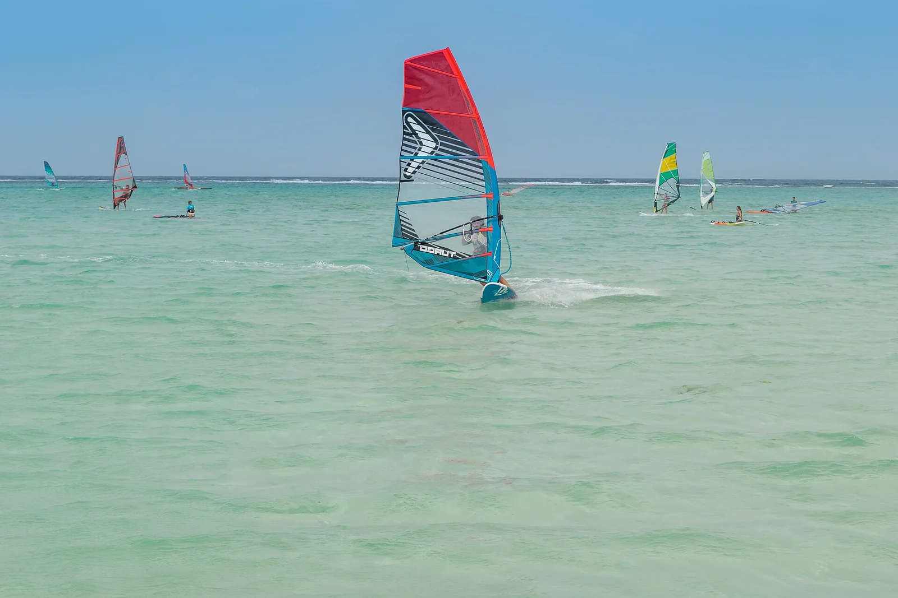

Lac Bay
Bonaire · windsurf, kitesurf, plongée, snorkeling

Lagon plat et peu profond balayé par les alizés : paradis de l'apprentissage du windsurf, et récifs réputés pour la plongée.
- Lieu
- Bonaire
- Niveau
- Débutant
- Activités
- windsurf, kitesurf, plongée, snorkeling
- Type d'eau
- Mer / océan
- Coordonnées
- 12.11, -68.23 (position approximative du secteur)
Dangers à connaître
- Vent constant, attention à la dérive.
- Coraux protégés tout autour de l'île.
Le conseil d'Ocean Buddy
Côté lagon pour débuter, côté océan pour les confirmés.
Ouvrir dans Ocean Buddy Télécharger sur l'App Store
Source : Description historique Ocean Buddy · vérification externe en attente.